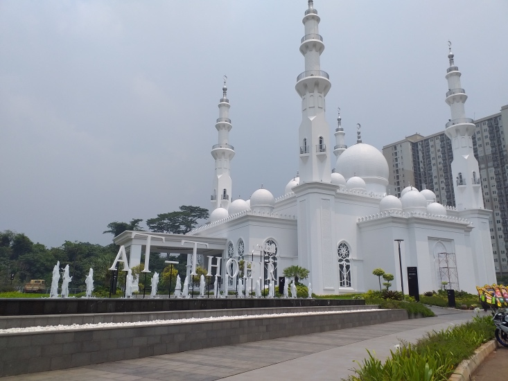
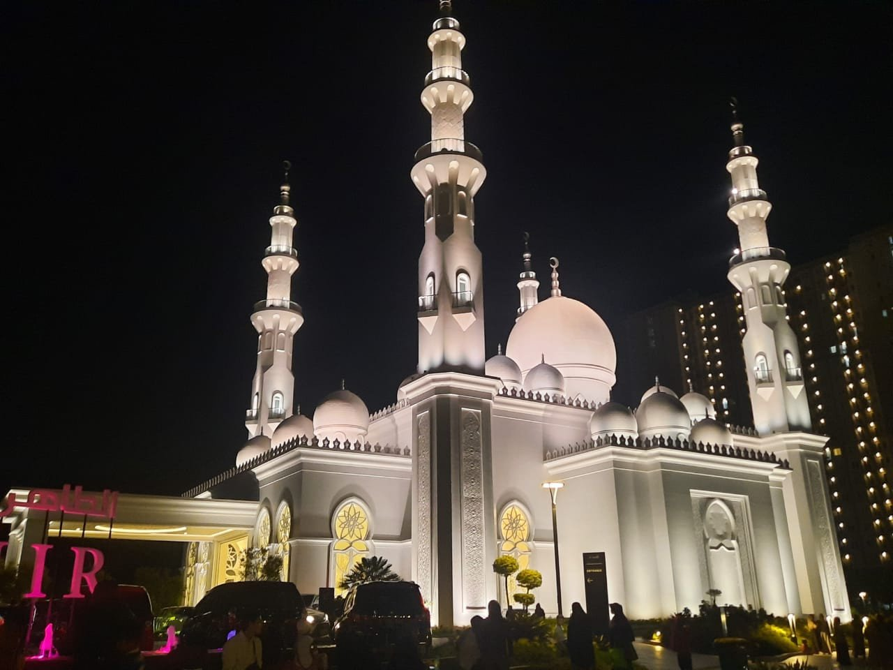
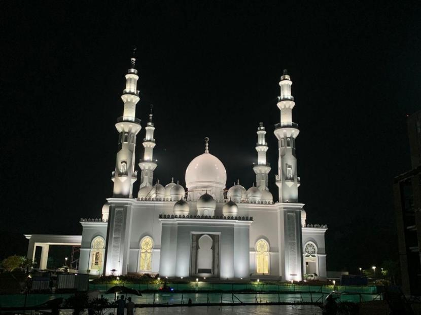
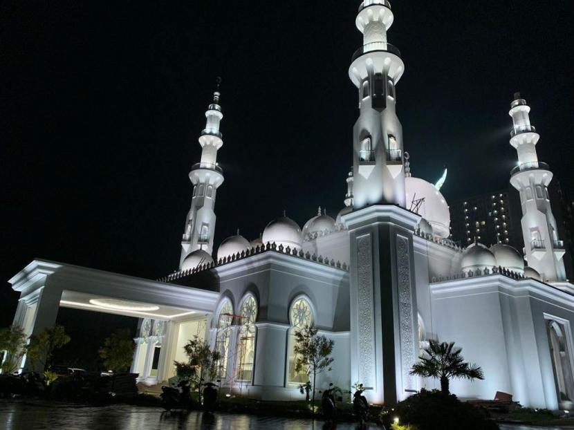

gallery foto






Masjid At-Thohir memiliki beberapa fasilitas yang cukup lengkap. Di antaranya, masjid ini dilengkapi oleh toilet, perpustakaan, dan lahan parkir yang sangat luas. Terdapat pula kantin yang sangat bersih dan nyaman.
HVFV+3WF, Jl. Mochamad Thohir, Tapos, Kec. Tapos, Kota Depok, Jawa Barat 16457
Testimoni & Komentar
setiap hari mereka mengontrol kondisi masjid kelayakan properti masjid sehingga membuat jamaah nyaman dalam menjalankan ibadah di masjid at-thohir
Last updated 3 mins ago
Presiden RI Joko Widodo (Jokowi) meresmikan Masjid At-Thohir yang terletak di daerah Tapos, Kota Depok, Provinsi Jawa Barat, Rabu (09/03/2022).
Last updated 3 mins ago
Ketua Takmir dan Imam Besar Masjid At Thohir Abdul Aziz Al-Hafizh mengajak umat Muslim untuk memakmurkan Masjid At Thohir pada bulan suci Ramadhan 1443 Hijriyah beliau mempersiapkan kegiatan untuk para jamaah. Di antaranya, tadarus Alquran, kajian Islami, hingga sahur bersama.
Last updated 3 mins ago